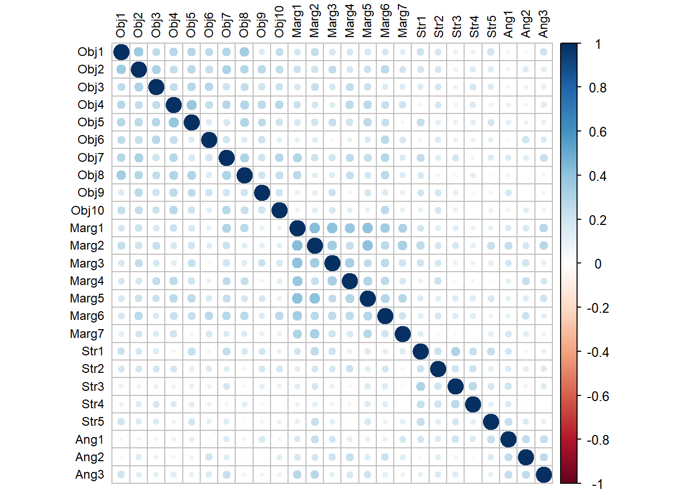
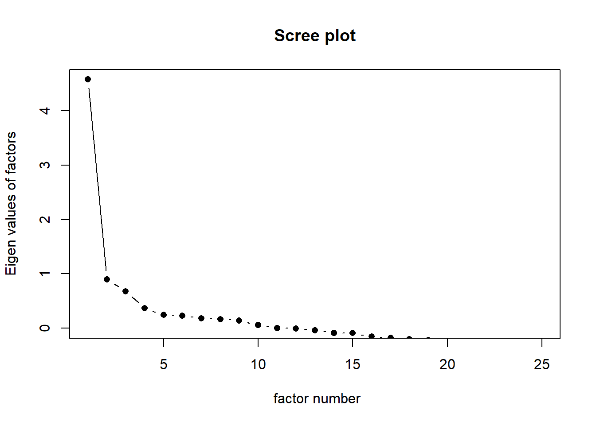
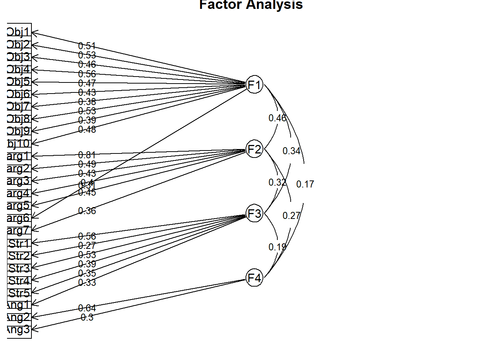

# Required packages for this R script
library(psych)
library(corrplot)
library(GPArotation)
library(readxl)10 Exploratory Factor Analysis
First, we load the following R packages in our R session:
10.1 Introduction
Exploratory Factor Analysis (EFA) focuses on identifying unobserved latent variables (also known as common factors) that explain the correlations among observed variables, with the aim of uncovering the data’s underlying structure.
Observed variables (also called manifest variables) are the variables that we can directly measure or observe.
Latent variables are hidden or abstract concepts inferred from manifest variables.
Exploratory Factor Analysis
Exploratory Factor Analysis (EFA) can be used to explore the dimensionality of a measurement instrument by identifying the smallest number of interpretable factors that explain the common variance among variables.
Let’s say we have \(p\) observed variables, denoted as \(X_1, X_2, ..., X_p\). The factor model for the \(i\)-th observed variable (\(X_i\)) can be expressed as a regression on the common factors:
\[X_i = l_{i1}F_1 + l_{i2}F_2 + ...+ l_{ij}F_j +... + l_{ik}F_k + u_i\]
Where:
- \(X_i\) is the \(i\)-th observed variable (often standardized to have a mean of 0 and a standard deviation of 1).
- \(F_j\) is the \(j\)-th common factor (\(j = 1, 2, ..., k\)), which are the latent constructs we’re trying to uncover.
- \(l_{ij}\) is the factor loading of the \(i\)-th observed variable on the \(j\)-th common factor. It represents the strength and direction of the association between the observed variable and the factor.
- \(k\) is the number of common factors (where \(k < p\)). This is a key parameter to determine in EFA.
- \(u_i\) is the unique factor associated with the observed variable \(X_i\). It represents the part of \(X_i\) that is not explained by the common factors (\(F_1, F_2, ..., F_k\)). In EFA, the \(u_i\) terms are assumed to be uncorrelated with each other and with the common factors, and have a mean of zero.
Furthermore, the variance of \(u_i\) (i.e., \(Var(u_i)\)) is commonly referred to as the uniqueness of \(X_i\). Although it is sometimes denoted conventionally as \(u_i^2\), a more precise notation is \(\sigma^2(u_i)\). This term represents the proportion of variance in \(X_i\) that is unique (idiosyncratic) and not explained by the underlying common factors.
10.2 Steps in the process of EFA
Prepare the Data: Standardize the data. In practice, Likert scale data are typically not standardized, as the scale is generally considered consistent across items. (b) Address outliers in the data. Note that outliers in Likert data are often extreme values, such as respondents who consistently select the “0 = not at all stressful” or “5 = extremely stressful” option. (c) Additionally, it is important to reverse-score negatively worded items to ensure that all items are scaled in the same direction (though this step is not applicable in our example).
Evaluate Assumptions: Assess the suitability of the data for EFA using diagnostic tests such as the Kaiser-Meyer-Olkin (KMO) measure of sampling adequacy and Bartlett’s test of sphericity. Additionally, examine the correlation matrix to ensure that variables are sufficiently correlated for factor analysis but without multicollinearity (extremely high correlations) or singularity (perfect correlations of 1 or -1). These tests determine whether the correlation matrix is appropriate for factor extraction.
Choose the Extraction Method: Select an extraction method for factors (e.g., Principal Axis Factoring, Maximum Likelihood, or Maximum Residuals). Principal Axis Factoring is commonly used when we assume that underlying latent factors are driving correlations.
Determine the Number of Factors: Identify how many factors to extract, guided by criteria such as eigenvalues greater than one, scree plot inspection, or parallel analysis. These factors often correspond to underlying subscales.
Factor Rotation: Apply a rotation method to simplify the factor structure. Orthogonal rotation (e.g., Varimax) assumes factors are uncorrelated. Oblique rotation (e.g., Oblimin, Promax) assumes factors are correlated.
Interpret the Factors: Examine the factor loadings to interpret each factor. Look for variables that load highly on each factor and assign meaningful labels to the factors.
Assess Factor Reliability: Use Cronbach’s Alpha to assess the internal consistency or reliability of the factors. A value above 0.7 indicates good reliability.
Refine the Model: Based on the results, you may choose to drop items with low factor loadings or revise the number of factors. Ensure that any issues of singularity are addressed by removing highly correlated variables.
Finalize the Factor Solution: Once the factors are interpretable and reliable, finalize the model and prepare the results for reporting.
10.3 EFA in R
EXAMPLE DATA
Our data analysis is based on the paper published by Lewis and Neville on the development of the Gendered Racial Microaggressions Scale for Black Women (GRMS). The study introduced a specialized psychometric tool designed to capture the unique, intersecting experiences of racism and sexism faced by Black women, a phenomenon referred to as gendered racism.
Below is an outline of the 25 items included in the article by Lewis and Neville.
- Unattractive because of size of butt (Obj1)
- Negative comments about size of facial features (Obj2)
- Imitated the way they think Black women speak (Obj3)
- Someone made me feel unattractive (Obj4)
- Negative comment about skin tone (Obj5)
- Someone assumed I speak a certain way (Obj6)
- Objectified me based on physical features(Obj7)
- Someone assumed I have a certain body type (Obj8)
- Made a sexually inappropriate comment (Obj9)
- Negative comments about my hair when natural (Obj10)
- I have felt unheard (Marg1)
- My comments have been ignored (Marg2)
- Someone challenged my authority (Marg3)
- I have been disrespected in workplace (Marg4)
- Someone has tried to “put me in my place” (Marg5)
- Felt excluded from networking opportunities (Marg6)
- Assumed I did not have much to contribute to the conversation (Marg7)
- Someone assumed I was sassy and straightforward (Str1)
- I have been told that I am too independent (Str2)
- Someone made me feel exotic as a Black woman (Str3)
- I have been told that I am too assertive (Str4)
- Assumed to be a strong Black woman (Str5)
- Someone has told me to calm down (Ang1)
- Perceived to be “angry Black woman” (Ang2)
- Someone accused me of being angry when speaking calm (Ang3)
10.3.1 Import the dataset
dat <- read_excel("data/GRMS.xlsx")
dat# A tibble: 259 × 25
Obj1 Obj2 Obj3 Obj4 Obj5 Obj6 Obj7 Obj8 Obj9 Obj10 Marg1 Marg2 Marg3
<dbl> <dbl> <dbl> <dbl> <dbl> <dbl> <dbl> <dbl> <dbl> <dbl> <dbl> <dbl> <dbl>
1 2 1 1 3 2 2 2 1 4 3 2 1 2
2 4 3 2 3 2 3 3 2 2 3 2 2 2
3 2 3 4 3 3 4 3 1 5 2 3 4 3
4 4 3 2 2 3 0 1 1 2 1 2 1 3
5 3 2 3 3 4 3 1 2 1 2 3 3 3
6 2 3 2 2 1 2 4 2 2 3 3 3 3
7 3 2 2 3 4 2 1 3 3 3 3 3 3
8 2 1 2 1 2 1 3 3 1 2 2 3 0
9 2 3 2 1 2 1 2 3 2 2 1 2 0
10 3 1 3 4 1 4 2 2 3 3 2 3 3
# ℹ 249 more rows
# ℹ 12 more variables: Marg4 <dbl>, Marg5 <dbl>, Marg6 <dbl>, Marg7 <dbl>,
# Str1 <dbl>, Str2 <dbl>, Str3 <dbl>, Str4 <dbl>, Str5 <dbl>, Ang1 <dbl>,
# Ang2 <dbl>, Ang3 <dbl>10.3.2 Correlation matrix
cor_matrix <- round(cor(dat, use = "complete.obs"), 2)
cor_matrix Obj1 Obj2 Obj3 Obj4 Obj5 Obj6 Obj7 Obj8 Obj9 Obj10 Marg1 Marg2 Marg3
Obj1 1.00 0.35 0.25 0.27 0.28 0.25 0.28 0.35 0.15 0.24 0.19 0.25 0.17
Obj2 0.35 1.00 0.31 0.25 0.27 0.23 0.31 0.28 0.26 0.24 0.22 0.21 0.25
Obj3 0.25 0.31 1.00 0.24 0.28 0.28 0.20 0.25 0.21 0.22 0.17 0.23 0.17
Obj4 0.27 0.25 0.24 1.00 0.39 0.23 0.28 0.30 0.26 0.28 0.22 0.18 0.14
Obj5 0.28 0.27 0.28 0.39 1.00 0.15 0.18 0.29 0.25 0.20 0.17 0.20 0.23
Obj6 0.25 0.23 0.28 0.23 0.15 1.00 0.20 0.14 0.21 0.12 0.10 0.14 0.05
Obj7 0.28 0.31 0.20 0.28 0.18 0.20 1.00 0.31 0.19 0.28 0.30 0.21 0.20
Obj8 0.35 0.28 0.25 0.30 0.29 0.14 0.31 1.00 0.19 0.23 0.27 0.14 0.14
Obj9 0.15 0.26 0.21 0.26 0.25 0.21 0.19 0.19 1.00 0.20 0.10 0.12 0.21
Obj10 0.24 0.24 0.22 0.28 0.20 0.12 0.28 0.23 0.20 1.00 0.09 0.12 0.17
Marg1 0.19 0.22 0.17 0.22 0.17 0.10 0.30 0.27 0.10 0.09 1.00 0.43 0.41
Marg2 0.25 0.21 0.23 0.18 0.20 0.14 0.21 0.14 0.12 0.12 0.43 1.00 0.35
Marg3 0.17 0.25 0.17 0.14 0.23 0.05 0.20 0.14 0.21 0.17 0.41 0.35 1.00
Marg4 0.19 0.18 0.24 0.26 0.20 0.10 0.25 0.24 0.07 0.12 0.38 0.23 0.32
Marg5 0.17 0.22 0.21 0.27 0.25 0.16 0.23 0.19 0.19 0.11 0.41 0.40 0.25
Marg6 0.18 0.27 0.16 0.23 0.22 0.26 0.28 0.26 0.15 0.26 0.35 0.27 0.25
Marg7 0.13 0.19 0.14 0.19 0.06 0.17 0.16 0.14 0.10 0.11 0.31 0.33 0.20
Str1 0.22 0.18 0.14 0.06 0.23 0.07 0.25 0.17 0.19 0.10 0.19 0.25 0.20
Str2 0.19 0.18 0.19 0.19 0.12 0.15 0.13 0.06 0.18 0.19 0.12 0.18 0.17
Str3 0.10 0.09 0.09 0.08 0.11 0.09 0.19 0.05 0.12 0.10 0.13 0.18 0.10
Str4 0.09 0.14 0.18 0.15 0.12 0.08 0.07 0.13 0.05 0.02 0.08 0.12 0.08
Str5 0.20 0.15 0.15 0.08 0.19 0.11 0.15 0.04 0.07 0.09 0.10 0.23 0.12
Ang1 0.06 0.07 0.07 0.09 0.12 0.04 0.15 0.07 0.17 0.06 0.16 0.23 0.18
Ang2 0.06 0.15 0.08 0.06 0.09 0.20 0.13 -0.03 0.00 0.14 0.17 0.19 0.19
Ang3 0.21 0.13 0.11 0.14 0.11 0.16 0.23 0.07 0.06 0.08 0.28 0.28 0.11
Marg4 Marg5 Marg6 Marg7 Str1 Str2 Str3 Str4 Str5 Ang1 Ang2 Ang3
Obj1 0.19 0.17 0.18 0.13 0.22 0.19 0.10 0.09 0.20 0.06 0.06 0.21
Obj2 0.18 0.22 0.27 0.19 0.18 0.18 0.09 0.14 0.15 0.07 0.15 0.13
Obj3 0.24 0.21 0.16 0.14 0.14 0.19 0.09 0.18 0.15 0.07 0.08 0.11
Obj4 0.26 0.27 0.23 0.19 0.06 0.19 0.08 0.15 0.08 0.09 0.06 0.14
Obj5 0.20 0.25 0.22 0.06 0.23 0.12 0.11 0.12 0.19 0.12 0.09 0.11
Obj6 0.10 0.16 0.26 0.17 0.07 0.15 0.09 0.08 0.11 0.04 0.20 0.16
Obj7 0.25 0.23 0.28 0.16 0.25 0.13 0.19 0.07 0.15 0.15 0.13 0.23
Obj8 0.24 0.19 0.26 0.14 0.17 0.06 0.05 0.13 0.04 0.07 -0.03 0.07
Obj9 0.07 0.19 0.15 0.10 0.19 0.18 0.12 0.05 0.07 0.17 0.00 0.06
Obj10 0.12 0.11 0.26 0.11 0.10 0.19 0.10 0.02 0.09 0.06 0.14 0.08
Marg1 0.38 0.41 0.35 0.31 0.19 0.12 0.13 0.08 0.10 0.16 0.17 0.28
Marg2 0.23 0.40 0.27 0.33 0.25 0.18 0.18 0.12 0.23 0.23 0.19 0.28
Marg3 0.32 0.25 0.25 0.20 0.20 0.17 0.10 0.08 0.12 0.18 0.19 0.11
Marg4 1.00 0.30 0.26 0.16 0.10 0.21 0.05 0.06 0.03 0.12 0.22 0.17
Marg5 0.30 1.00 0.29 0.28 0.16 0.13 0.16 0.14 0.18 0.12 0.14 0.21
Marg6 0.26 0.29 1.00 0.20 0.13 0.18 0.15 0.13 0.08 0.11 0.21 0.12
Marg7 0.16 0.28 0.20 1.00 0.14 0.05 0.04 0.02 0.12 0.17 0.13 0.09
Str1 0.10 0.16 0.13 0.14 1.00 0.21 0.30 0.23 0.23 0.18 0.05 0.10
Str2 0.21 0.13 0.18 0.05 0.21 1.00 0.20 0.20 0.12 0.16 0.12 0.16
Str3 0.05 0.16 0.15 0.04 0.30 0.20 1.00 0.27 0.18 0.20 0.07 0.15
Str4 0.06 0.14 0.13 0.02 0.23 0.20 0.27 1.00 0.12 0.15 0.03 0.02
Str5 0.03 0.18 0.08 0.12 0.23 0.12 0.18 0.12 1.00 0.22 0.15 0.11
Ang1 0.12 0.12 0.11 0.17 0.18 0.16 0.20 0.15 0.22 1.00 0.24 0.23
Ang2 0.22 0.14 0.21 0.13 0.05 0.12 0.07 0.03 0.15 0.24 1.00 0.25
Ang3 0.17 0.21 0.12 0.09 0.10 0.16 0.15 0.02 0.11 0.23 0.25 1.00corrplot(cor(dat, use="complete.obs"), order = "original",
tl.col='black', tl.cex=.75) 
10.3.3 Assumptions
- Bartlett’s Test of Sphericity
This tests the null hypothesis that our correlation matrix is an identity matrix (a matrix where all diagonal values are 1 and all off-diagonal correlations are 0, meaning the variables are completely uncorrelated). A significant result (\(p < 0.05\)) indicates that the correlation matrix significantly differs from an identity matrix, confirming that our variables have enough shared correlation among variables to justify factor extraction.
cortest.bartlett(cor(dat), n = nrow(dat))$chisq
[1] 1217.508
$p.value
[1] 1.107085e-110
$df
[1] 300Our Bartlett’s test is significant: \(\chi^2= 1217\) (p<0.001). This means that our sample correlation matrix is statistically significantly different than an identity matrix and, therefore, supports a component analytic approach for investigating the data.
- Kaiser-Meyer-Olkin (MKO) index of Sampling Adequacy
The Kaiser-Meyer-Olkin index (KMO) is an index of sampling adequacy that varies between 0 and 1. Kaiser’s 1974 recommendations were:
- bare minimum of 0.5
- values between 0.5 and 0.7 as mediocre
- values between 0.7 and 0.8 as good
- values between 0.8 and 0.9 as great
- values above 0.9 are superb
If the KMO is below the recommendations, we should probably collect more data to see if it can achieve a satisfactory value.
KMO(cor(dat))Kaiser-Meyer-Olkin factor adequacy
Call: KMO(r = cor(dat))
Overall MSA = 0.85
MSA for each item =
Obj1 Obj2 Obj3 Obj4 Obj5 Obj6 Obj7 Obj8 Obj9 Obj10 Marg1 Marg2 Marg3
0.87 0.91 0.88 0.85 0.85 0.80 0.90 0.85 0.81 0.85 0.86 0.89 0.86
Marg4 Marg5 Marg6 Marg7 Str1 Str2 Str3 Str4 Str5 Ang1 Ang2 Ang3
0.86 0.90 0.89 0.84 0.83 0.85 0.82 0.74 0.84 0.78 0.76 0.81 The Kaiser–Meyer–Olkin (KMO) measure verified the sampling adequacy for the analysis KMO = 0.85, which is considered “great”. Additionally, all individual KMO values were above 0.74 (well above the acceptable threshold of 0.50).
- No multicollinearity and singularity
In Exploratory Factor Analysis, we are also particularly concerned with issues of multicollinearity and singularity in the data, as these can affect the reliability and interpretability of the factor model.
One way to assess this is by examining the determinant of the correlation matrix. If the determinant is smaller than 0.00001, this may indicate that some variables are too highly correlated (multicollinearity), or some variables are perfectly correlated (singularity), which can distort factor extraction.
In our example, the determinant of the correlation matrix (a 25 x 25 matrix with Pearson’s correlations) can be calculated as follows:
round(det(cor(dat)), 4) [1] 0.0075With a value of 0.0075, the determinant is comfortably above the 0.00001 threshold, indicating that our data is appropriate for factor analysis.
If the determinant were below the threshold, we would need to identify and address problematic variables and then re-run the diagnostic checks.
10.3.4 Specify the Number of Factors
A critical step in Exploratory Factor Analysis (EFA) is determining the appropriate number of factors to retain. Retaining too many factors may introduce noise and reduce interpretability, whereas retaining too few can oversimplify the underlying structure and omit meaningful dimensions.
Several statistical criteria are commonly used to guide this decision, including eigenvalues greater than 1 (Kaiser criterion), scree plot inspection, parallel analysis, and the proportion of explained variance. Researchers typically combine these methods with theoretical interpretability to identify the most appropriate factor solution.
- Cattell’s scree plot
A scree plot is a two-dimensional line graph used in Exploratory Factor Analysis (EFA) to help researchers visually determine the optimal number of factors to retain.
scree(cor(dat), factors = TRUE, pc = FALSE, hline = -1)
The scree plot displays each factor’s variance contribution (eigen value) against factor number, in descending order. The elbow — where the curve transitions from steep decline to a flat plateau — marks the point beyond which additional factors account for little more than chance variation.
Lewis and Neville (2015) examined models with two, three, four, and five factors. In this example, we will present a four-factor solution as the selected model.
10.3.5 Extraction of factors and rotation
Lewis and Neville (2015) used parallel analysis as their extraction method. In this example, we demonstrate the use of Principal Axis Factoring (PAF) for extraction and Oblimin as the rotation method. Additionally, we hide loading below 0.23.
NOTE: Rotation redistributes the variance among factors so that each item loads strongly on one factor and weakly on the others. There are two types of factor rotation: orthogonal, which constrains factors to be uncorrelated, and oblique, which allows factors to correlate freely. The choice should be guided by theory — oblique rotation is generally preferred in social science research, where latent constructs rarely meet the strict independence assumption imposed by orthogonal rotation.
efa_result <- fa(dat, nfactors = 4, fm = "pa", rotate = "oblimin")
print(efa_result, cut = 0.23, digits = 3)Factor Analysis using method = pa
Call: fa(r = dat, nfactors = 4, rotate = "oblimin", fm = "pa")
Standardized loadings (pattern matrix) based upon correlation matrix
PA1 PA2 PA3 PA4 h2 u2 com
Obj1 0.508 0.293 0.707 1.06
Obj2 0.526 0.319 0.681 1.04
Obj3 0.463 0.250 0.750 1.07
Obj4 0.563 0.326 0.674 1.04
Obj5 0.473 0.280 0.720 1.17
Obj6 0.426 0.246 0.225 0.775 1.77
Obj7 0.385 0.273 0.727 1.43
Obj8 0.535 0.353 0.647 1.52
Obj9 0.391 0.186 0.814 1.32
Obj10 0.479 0.217 0.783 1.15
Marg1 0.811 0.619 0.381 1.01
Marg2 0.492 0.411 0.589 1.52
Marg3 0.429 0.277 0.723 1.19
Marg4 0.400 0.281 0.719 1.82
Marg5 0.451 0.326 0.674 1.26
Marg6 0.310 0.250 0.271 0.729 2.31
Marg7 0.356 0.181 0.819 1.20
Str1 0.558 0.363 0.637 1.16
Str2 0.266 0.179 0.821 2.51
Str3 0.526 0.276 0.724 1.01
Str4 0.388 0.167 0.833 1.19
Str5 0.348 0.178 0.822 1.40
Ang1 0.334 0.241 0.223 0.777 2.15
Ang2 0.635 0.431 0.569 1.03
Ang3 0.298 0.195 0.805 1.91
PA1 PA2 PA3 PA4
SS loadings 2.794 2.027 1.367 0.913
Proportion Var 0.112 0.081 0.055 0.037
Cumulative Var 0.112 0.193 0.248 0.284
Proportion Explained 0.394 0.285 0.192 0.129
Cumulative Proportion 0.394 0.679 0.871 1.000
With factor correlations of
PA1 PA2 PA3 PA4
PA1 1.000 0.464 0.342 0.173
PA2 0.464 1.000 0.318 0.269
PA3 0.342 0.318 1.000 0.195
PA4 0.173 0.269 0.195 1.000
Mean item complexity = 1.4
Test of the hypothesis that 4 factors are sufficient.
df null model = 300 with the objective function = 4.893 with Chi Square = 1217.508
df of the model are 206 and the objective function was 0.769
The root mean square of the residuals (RMSR) is 0.036
The df corrected root mean square of the residuals is 0.044
The harmonic n.obs is 259 with the empirical chi square 101.207 with prob < 1
The total n.obs was 259 with Likelihood Chi Square = 189.189 with prob < 0.794
Tucker Lewis Index of factoring reliability = 1.0271
RMSEA index = 0 and the 90 % confidence intervals are 0 0.0185
BIC = -955.518
Fit based upon off diagonal values = 0.965
Measures of factor score adequacy
PA1 PA2 PA3 PA4
Correlation of (regression) scores with factors 0.798 0.791 0.731 0.708
Multiple R square of scores with factors 0.637 0.626 0.535 0.501
Minimum correlation of possible factor scores 0.274 0.252 0.069 0.003In the rotated factor matrix, a few items exhibit cross-loadings, meaning they load significantly on more than one factor:
Obj6 loads on both Factor 1 and Factor 4, with loadings of 0.43 and 0.25, respectively. While the item shows some association with both factors, its stronger loading on Factor 1 suggests it aligns more closely with the Objectification construct.
Marg6 also displays cross-loadings, with loadings of 0.31 on Factor 1 and 0.25 on Factor 2. Though both values are relatively low, the item may still require closer evaluation to determine its conceptual alignment.
Ang1 loads on both Factor 3 and Factor 4, with loadings of 0.33 and 0.24, respectively. Although neither loading is particularly high, this item should be reviewed in the context of theoretical expectations.
Partitioning the variance in factor analysis
Factor analysis assumes that variance can be partitioned into two types of variance: common and unique.
Common variance (communality), denoted usually as \(h^2\), represents the proportion of an item’s total variance accounted for by the common factors. It ranges from 0 to 1, where values closer to 1 indicate that the item is well-explained by the factor solution and values closer to 0 suggest the item shares little variance with the underlying factors.
Unique variance (uniqueness), denoted usually as \(u^2\) (\(u^2=1-h^2\)), represents the proportion of variance that is specific to the variable itself and not explained by the common factors. Higher uniqueness indicates lower relevance in the factor model. If a variable has high uniqueness (close to 1), it is poorly explained by the extracted factors and may warrant reconsideration.
10.3.6 Explained variance and model fit
Explained variance
Factor SS_Loadings % of Var Cum Var (%)
1 PA1 2.79 11.2 11.2
2 PA2 2.03 8.1 19.3
3 PA3 1.37 5.5 24.8
4 PA4 0.91 3.7 28.4Factor 1 explains 11.2% of the shared variance, Factor 2 explains an additional 8.1%, Factor 3 explains another 5.5%, and Factor 4 explains an additional 3.6%, resulting in a cumulative common variance of 28.4% explained by the first four factors.
Although explaining about 30% of the common variance may seem modest, it is not uncommon in social science research, particularly when dealing with psychological or behavioral constructs. These constructs are often complex and difficult to measure precisely, which can lead to lower levels of explained variance.
The Inter-Factor Correlation Matrix reveals that the four factors are positively correlated with each other, with correlations ranging from 0.17 to 0.46.
Factor PA1 PA2 PA3 PA4
1 PA1 1.00 0.46 0.34 0.17
2 PA2 0.46 1.00 0.32 0.27
3 PA3 0.34 0.32 1.00 0.19
4 PA4 0.17 0.27 0.19 1.00
Model fit
The chi-square test can be used to assess whether the model fits the data. The null hypothesis for the chi-square test is that the model fits the data perfectly. Therefore, a non-significant chi-square value (e.g., p > 0.05) indicates that the model fits the data reasonably well. However, the chi-square test is sensitive to sample size and non-normal variable distributions.
In addition to the chi-square test, the root mean square error of approximation (RMSEA) serves as an absolute fit index that takes model complexity into account by incorporating a penalty for lack of parsimony. RMSEA values less than or equal to 0.08 are typically interpreted as good model fit.
RMSEA Lower Upper TLI BIC Chi2 df p
RMSEA 0 0 0.02 1.03 -955.52 189.19 206 0.794In our model: \(\chi^2(206)= 189.19\), p = 0.794, which is non-significant and suggests that the model fits the data well. Moreover, the RMSEA value is 0.00, indicating a close fit between the model and the observed data.
These results suggest that the model structure is appropriate, even if the strength of the factors is modest.
10.3.7 Path diagram
The path diagram for the four-factor, 25 items EFA, showing only the dominant loading per item (for clarity) follows:
colnames(efa_result$loadings) <- c("F1", "F2", "F3", "F4")
psych::fa.diagram(efa_result, cut = 0, digits = 2, l.cex=0.8,
marg=c(0.0, 0.5, 0.5, 0.1), sort = F)
This diagram illustrates how the observed variables can be grouped together, allowing us to identify the following common factors (latent variables). These factors can also be considered as the subscales of the questionnaire:
- Factor 1: Assumptions of Beauty and Sexual Objectification (11 items; Obj1-Obj10 and Marg6)
- Factor 2: Silenced and Marginalized (6 items; Marg1-Marg5, Marg7)
- Factor 3: Strong Woman Stereotype (6 items; Str1-Str5, Ang1)
- Factor 4: Angry Woman Stereotype (2 items; Ang2 and Ang3)
It is important to note that the arrows point from the factor (oval) to the observed variables (items in squares) illustrating that the factor “explains” the item’s score. This represents a reflective model, in which the latent construct exists independently of the measures. Additionally, note that the path diagram includes links with numerical values between latent factors, representing the correlation coefficients among them.
10.4 Reliability analysis
An important step in establishing the integrity of factors derived from a factor analysis (which will ultimately be presented as subscales of the scale) is to assess their internal consistency as an initial indicator of reliability.
We have four derived factors, so we will run Cronbach’s reliability analyis four times-once for each subset of observed variables (items) grouped by the factor analysis.
Factor Items Alpha
1 F1 11 0.778
2 F2 6 0.731
3 F3 6 0.594
4 F4 2 0.397